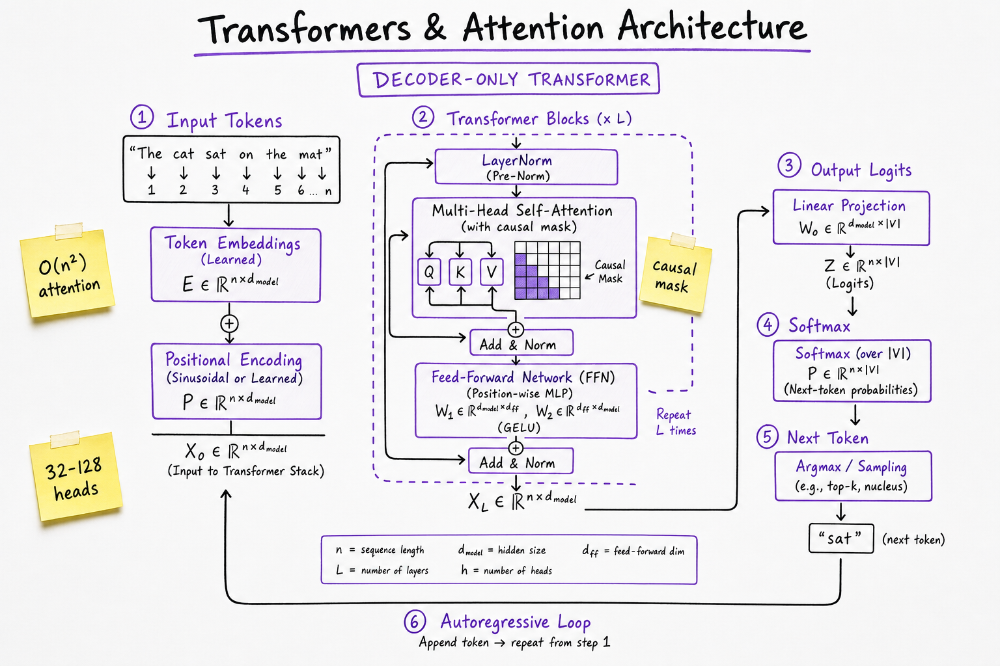
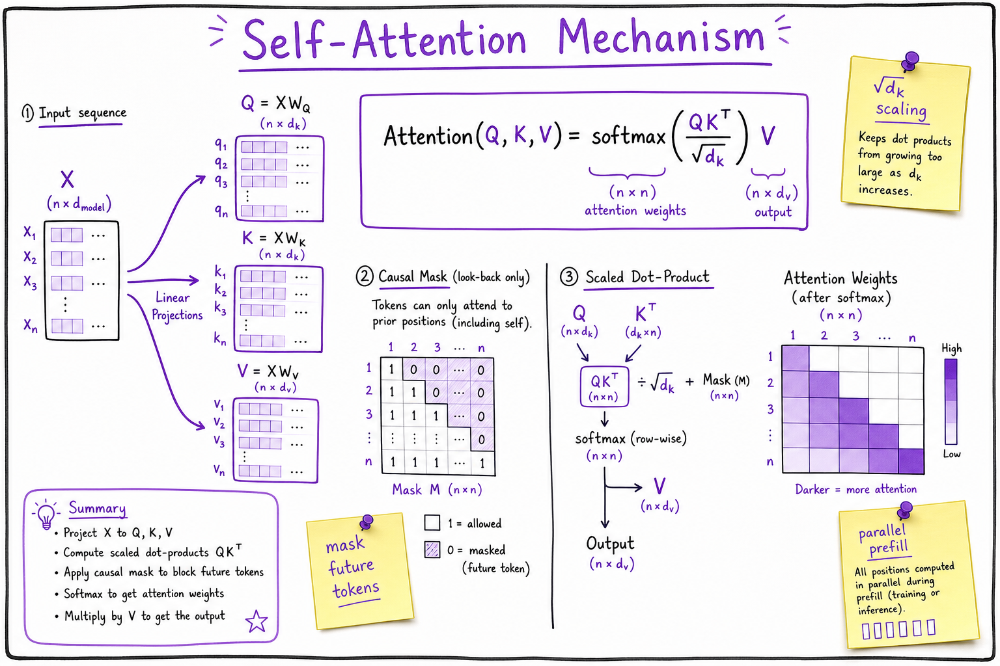
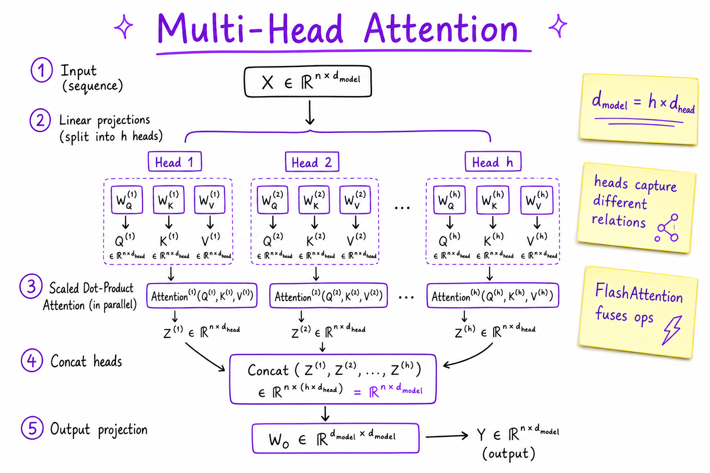

Transformers & Attention // Fundamentals
Causal self-attention, multi-head projections, RoPE positional encoding, and the decoder-only stack that powers GPT, Llama, and Claude. The whiteboard mechanism interviewers expect before RAG or agents.

Decoder-only transformer: embeddings + positional encoding feed stacked blocks of causal self-attention and FFN; output logits drive autoregressive next-token prediction.
01 — What & Why
The transformer (Vaswani et al., 2017) replaced recurrence with self-attention: each token attends to others in parallel. Modern chat LLMs use decoder-only stacks with a causal mask so generation stays left-to-right.
Functional
- Map token sequence to next-token logits
- Capture long-range dependencies without RNN vanishing gradients
- Parallelize prefill across prompt tokens on GPU
Non-functional
- Attention cost O(n²) in sequence length n (naive)
- Memory scales with layers × heads × seq_len (KV cache)
See LLM Fundamentals for the full training→inference story; this sheet is the mechanism.
01a — Core Concepts
| Term | Definition | Gotcha |
|---|---|---|
| Self-attention | Q,K,V from same sequence; weighted sum of values | Not cross-attention (encoder-decoder) |
| Scaled dot-product | softmax(QKT/√dk)V | Scaling prevents softmax saturation |
| Causal mask | Position i cannot attend to j > i | Required for autoregressive LM |
| Multi-head | h parallel attention subspaces, concat + project | d_model = h × d_head typically |
| RoPE | Rotary positional encoding in Q,K | Llama/Mistral default; better length extrapolation |
| FFN | Two linear layers with activation (SwiGLU) | ~2/3 of model parameters |
| FlashAttention | IO-aware fused attention kernels | Same math, less HBM traffic |
01b — API Surface (PyTorch / HuggingFace mental model)
import torch
import torch.nn.functional as F
def scaled_dot_product_attention(q, k, v, mask=None):
scores = torch.matmul(q, k.transpose(-2, -1)) / (q.size(-1) ** 0.5)
if mask is not None:
scores = scores.masked_fill(mask == 0, float("-inf"))
weights = F.softmax(scores, dim=-1)
return torch.matmul(weights, v)
# HF: model = AutoModelForCausalLM.from_pretrained("meta-llama/Llama-3-8B")
# outputs = model(input_ids, use_cache=True) # returns past_key_valuesProduction apps rarely implement attention directly — but interviews ask you to derive QKV and explain causal masking.
02 — When to Use / When NOT
| Architecture | Use When | Alternative |
|---|---|---|
| Decoder-only (GPT) | General chat, code, agents | Encoder-only for embeddings |
| Encoder-decoder (T5) | Fixed source→target (translation) | Decoder-only + prompt for chat |
| Encoder-only (BERT) | Classification, embeddings | Not for open-ended generation |
| Sparse attention | Very long context (>32K) | Full attention + KV optimizations |
03 — Architecture
Token IDs -> Embedding + PosEnc
-> [Block] x L:
x -> LN -> Multi-Head Causal Attention -> +residual
-> LN -> FFN (up -> act -> down) -> +residual
-> LN -> Linear(d_model, vocab) -> logits04 — Deep Dive: Self-Attention

Scaled dot-product self-attention with causal mask preventing future token peeking.
Each token produces Query, Key, Value via learned linear maps. Attention weights = softmax of dot products; output = weighted sum of Values. Causal mask sets future positions to −∞ before softmax.
05 — Deep Dive: Multi-Head Attention

Parallel attention heads capture syntactic, semantic, and positional relations; outputs concatenated and projected.
Heads specialize (some track syntax, some coreference). Split d_model into h heads of dimension d_head = d_model/h. Output = Concat(head1,…)WO.
06 — Deep Dive: Positional Encoding (RoPE)
RoPE rotates Q and K vectors by position-dependent angles. Relative position emerges in dot products; extrapolates better than absolute sinusoidal encodings. Used in Llama 3, Mistral, Qwen.
ALiBi (alternative): additive bias by distance — simpler extrapolation, less common in newest stacks.
07 — Deep Dive: FFN & Residual Connections
FFN: Linear(d → 4d) → GELU/SwiGLU → Linear(4d → d). Residual connections + LayerNorm (Pre-LN in modern stacks) stabilize deep training (32–80+ layers).
08 — Deep Dive: Complexity & Optimizations
- Naive attention: O(n²d) time, O(n²) memory for n tokens
- KV cache: O(n) memory per layer at decode; see Context Window & KV Cache
- FlashAttention: tiled computation, recomputes in SRAM
- GQA/MQA: share K/V heads across Q heads — fewer KV bytes
09 — Production & Ops
- Serving uses fused kernels (FlashAttention-2, cuDNN)
- Tensor parallel splits heads/layers across GPUs
- Monitor KV cache memory per request in Model Serving (vLLM)
- Quantization (INT4) shrinks weight memory, not attention FLOPs
10 — Where It Shows Up
- LLM Fundamentals — decoder-only stack overview
- Context Window & KV Cache — KV cache inference memory
- Tokenization & Context — tokens fed into embeddings
- Pre-training, SFT & RLHF — training these weights
- Model Serving (vLLM) — PagedAttention serving
- RAG End-to-End — attention over retrieved context
- Web Search Engine — ranking + LLM synthesis
11 — Common Pitfalls
- Confusing encoder-only BERT with generative decoder-only
- Ignoring causal mask in hand-rolled attention bugs
- Assuming O(n) attention without sparse methods or cache
- Forgetting FFN dominates parameter count
- Mixing absolute vs RoPE when extrapolating context